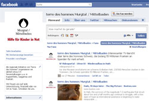
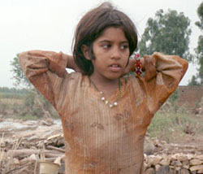

|
Mittwoch, 15. September 2010 |
terre des hommes Murgtal / Mittelbaden jetzt auch auf Facebook
|
Seit einigen Tagen ist unsere Arbeitsgruppe mit einer "Fanpage" auf Facebook vertreten. Ab sofort kann jeder, der bei Facebook Mitglied ist, ein "Fan" unserer Seite werden. Zusätzlich zur Homepage wollen wir dort z.B. auf sehens- und lesenswerte Videos und Artikel hinweisen. Außerdem sollen dort auch zahlreiche Fotos unserer Aktivitäten zu sehen sein.
Machen Sie mit und folgen Sie uns! Wir freuen uns über Ihre Meinung und Unterstützung.
Zu unserer Facebook-Seite
Zu unserer Twitter-Seite
|
Mittwoch, 15. September 2010 |
Pakistan – Hilfe für Flutopfer
|
terre des hommes ruft als Mitglied des »Bündnis Entwicklung Hilft« zu Spenden für die Flutopfer in Pakistan auf und unterstützt die Hilfsmaßnahmen der Mitgliedsorganisationen. Geprüft wird derzeit die Unterstützung eigener Projekte, z. B. über die terre des hommes-Föderation. Auch das terre des hommes-Regionalbüro Indien sondiert mögliche Hilfsmaßnahmen.
Jetzt spenden:
Konto 51 51
Bank für Sozialwirtschaft
BLZ 370 205 00
Weitere Informationen:
|
Mittwoch, 15. September 2010 |
Das Bankentribunal - die DVD
|
Im April 2010 veranstaltete Attac das »Bankentribunal«, um Ursachen und Folgen der Finanzkrise zu untersuchen. Als Zeugen, Ankläger, Verteidiger und Richter nahmen über 40 ExpertInnen teil. Mehr als 3.000 BesucherInnen verfolgten den Prozess. Die Anhörungen erstreckten sich über 17 Stunden. Eine DVD zeigt nun die Highlights (inkl. Bonus-Track mit Kabarett von Schramm/Priol).
Weitere Informationen:
|
Mittwoch, 15. September 2010 |
»Kinder – leichte Beute«
Diskussionsveranstaltung im Rahmen des »Forum Entwicklung« der Frankfurter Rundschau und der Gesellschaft für technische Zusammenarbeit (GTZ)
|
Finanz- und Wirtschaftskrise haben die schwierige Lage von Kindern in Entwicklungs- und Schwellenländern noch einmal verschärft. UN-Organisationen schätzen, dass 100 Millionen Kinder nicht zur Schule gehen und 150 Millionen schuften müssen, um ihre Familien mit über Wasser zu halten. Immer wieder werden Kinder aus Not sogar an Kinderhändler verkauft. Mit den vielfach missachteten Kinderrechten und den Möglichkeiten zu ihrem Schutz beschäftigt sich das Forum Entwicklung von Frankfurter Rundschau und der Gesellschaft für Technische Zusammenarbeit (gtz) am Montag, den 27. September 2010.Im FR-Foyer diskutieren
- Nia Künzer: Ex-Fußballnationalspielerin, in Botsuana geboren und Unterstützerin von Kinderprojekten
- Frank Bremer: gtz-Experte und Leiter eines Projekts zur Bekämpfung des Kinderhandels in der Elfenbeinküste
- Albert Recknagel: Kinderrechtsexperte von terre des hommes.
Die Moderation übernimmt FR-Redakteur Tobias Schwab.
Die Diskussion findet im FR-Domizil Neues Depot, Karl-Gerold-Platz 2 und beginnt am Montag, 27. September, um 18:30 Uhr. Einlass ab 18:00 Uhr – Eintritt frei |
Mittwoch, 15. September 2010 |
Weltarmutsgipfel 2010 - MDG-Ziele noch weit entfernt
|
Vom 20. bis 22. September treffen sich die Regierungschefs beim Weltarmutsgipfel der UNO. Dort beraten sie über die Umsetzung der im Jahr 2000 beschlossenen Millenniumsentwicklungsziele (MDGs). Die Bilanz von terre des hommes sieht kritisch aus. Weltweit finden im Vorfeld Aktionstage dazu statt.
Weitere Informationen:
|
Dienstag. 14. September 2010 |
"Keine Kürzung des deutschen Beitrags zum Globalen Fonds"
Bundesregierung will aus dem gemeinsamen Kampf gegen Aids aussteigen
|
Das Gesundheitsnetzwerk Action for Global Health fordert die Bundesregierung auf, die geplanten Kürzungen zum Globalen Fonds zur Bekämpfung von Aids, Malaria und Tuberkulose zurückzunehmen. Die Bundesregierung plane, ab dem Jahr 2012 die Zahlungen einzustellen. Unter Berücksichtigung des Dreijahreszyklus der anstehenden Finanzierungsperiode von 2011 bis 2013 entspräche dies einer Kürzung des derzeitigen deutschen Beitrags von 600 Millionen Euro um zwei Drittel. Ab 2012 solle es Abkommen auf bilateraler Ebene geben.
Der Globale Fonds versorgt knapp drei Millionen Menschen mit lebensnotwendigen Medikamenten, die den Ausbruch von Aids hinauszögern. Der Globale Fonds ist ein wichtiger Finanzierungsmechanismus im Kampf gegen Aids, Malaria und Tuberkulose. Deutschland ist nach den USA und Frankreich der drittgrößte Geber des Globalen Fonds. Eine Kürzung des deutschen Beitrags hätte schwerwiegende Folgen für die Gesundheitsversorgung der Menschen in Entwicklungsländern. Gerade in Zeiten der Finanzkrise sind Menschen in armen Ländern auf Unterstützung angewiesen.
"Die geplante Kürzung ist ein fatales Signal der Bundesregierung. Der von den G8-Staaten zugesicherte allgemeine Zugang aller HIV-positiven Menschen zu Medikamenten bis 2010 ist bis jetzt nicht erreicht worden und wird auch in den nächsten Jahren verfehlt werden, wenn die Bundesregierung ihre Mittel für den Globalen Fonds kürzt", erklärte Danuta Sacher, Geschäftsführerin von terre des hommes.
Action for Global Health protestiert gemeinsam mit dem Dachverband Entwicklungspolitik VENRO und dem Aktionsbündnis gegen AIDS seit dem 9. September in Berlin gegen die Kürzungspläne.
Action for Global Health wurde im Jahr 2006 von 15 Nichtregierungsorganisationen aus den Bereichen Gesundheit und Entwicklungszusammenarbeit mehrerer europäischer Länder zusammengeschlossen, darunter Deutschland, Frankreich, Italien, Spanien und Großbritannien. In Deutschland sind terre des hommes und die Welthungerhilfe im Netzwerk vertreten. Durch gezielte Öffentlichkeitsarbeit und den Dialog mit politischen Entscheidungsträgern macht Action for Global Health auf die Gesundheitssituation in Entwicklungsländern aufmerksam und fordert jedes Geberland auf, 0,1 Prozent des Bruttonationaleinkommens dafür zu zahlen.
Weitere Informationen:
|
|
|
|
 Ansprechpartner Ansprechpartner
|
|
Wolfgang Deppisch
(Projektinfos)
Tel. 07222 / 32927
Heinz Wolf
(Sponsoring, Allgemeines)
Tel. 07225 / 75543
weitere Ansprechpartner
|
|
Erlöse
1992-2012
|
|

Jahr |
Euro |
1992 |
70.000 |
1993 |
75.600 |
1994 |
83.883 |
1995 |
69.617 |
1996 |
51.412 |
1997 |
61.749 |
1998 |
60.333 |
1999 |
68.742 |
2000 |
85.492 |
2001 |
106.375 |
2002 |
78.937 |
2003 |
84.027 |
2004 |
76.662 |
2005 |
149.941 |
2006 |
84.497 |
2007 |
105.958 |
2008 |
104.053 |
2009 |
100.833 |
2010 |
107.254 |
2011 |
103.600 |
| 2012 |
158.250 |
| 2013 |
163.420 |
1977-2013 |
mehr als 2,7 Mio. € |
|
Detailansicht der Erlöszahlen |
|
|


;)